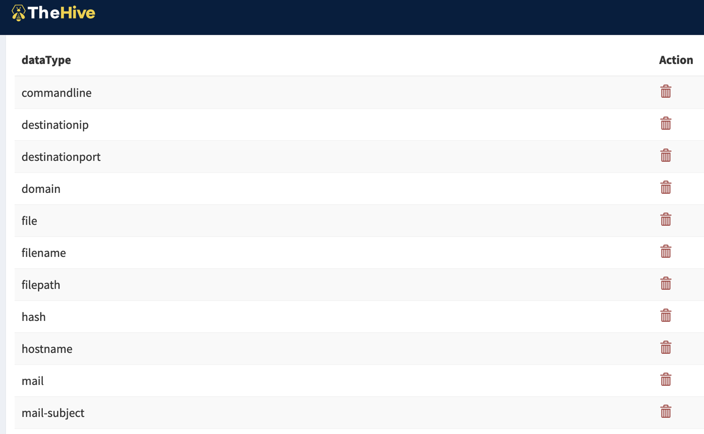
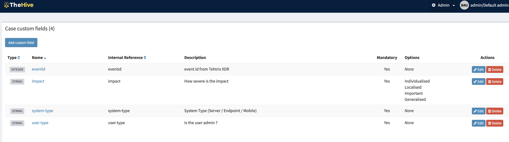
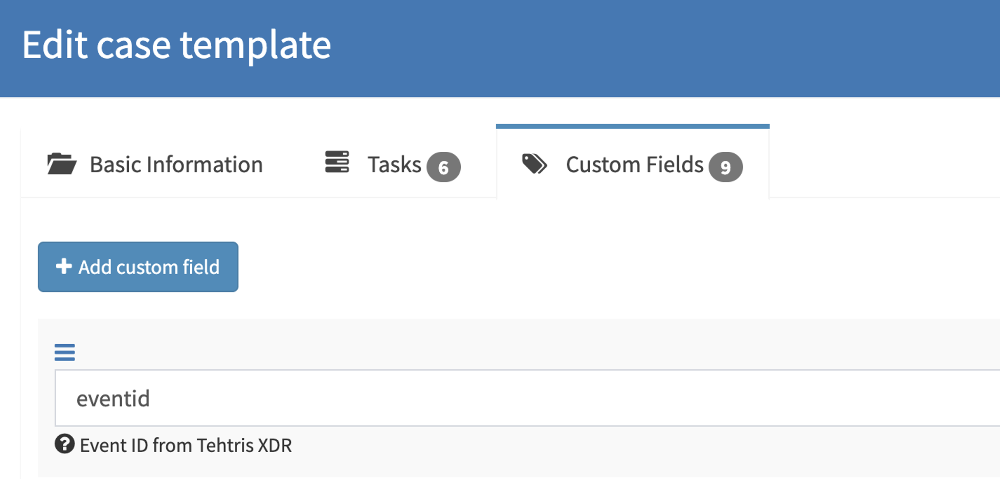
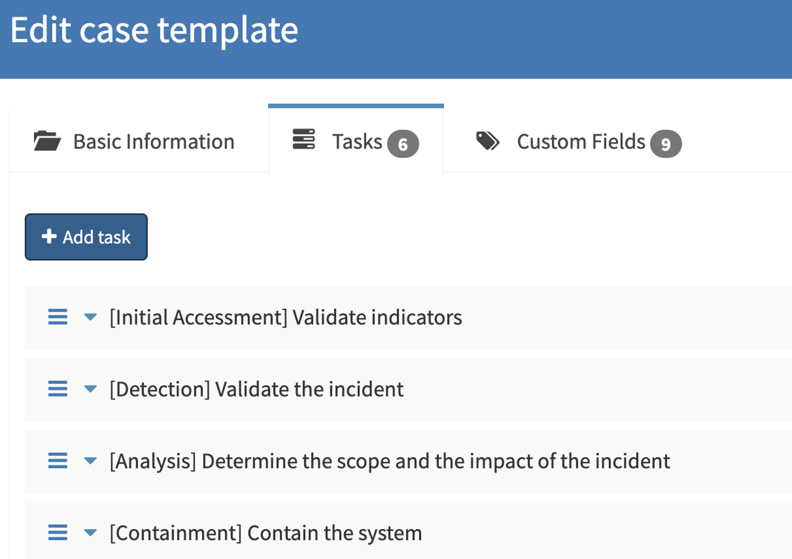

TheHive is a Security Incident Response Platform, a case management for the security team. The case management is used to create and track the security incidents, monitor the investigation progress. Centralize the alerts from the SIEM, and allows the collaboration between the analysts. TheHive separates the concept of Alert, Case, Task, and Observable. Every event that has matched a detection rule in the SIEM will be sent as an Alert to TheHive. Alerts are changed into a case if an investigation is needed.
2 ways of installation: local installation (run by services) or docker container.
Observable types are configured in the Administrators space: open Entities Management and select the Observable types tab.

Custom fields are fields that could be added to multiple cases. Field such as urgency, impact are not present and some organizations require those fields to be filled during an investigation. On TheHive4, connect as Admin and add case custom field.

As previously mentioned, custom field can be added in a case template. Case is an incident, case templates simplify the case creation by automatically creating the case with the minimum information and item in the case. Information, tasks and custom fields are item present in the case template.

Tasks standardize investigation of incidents.